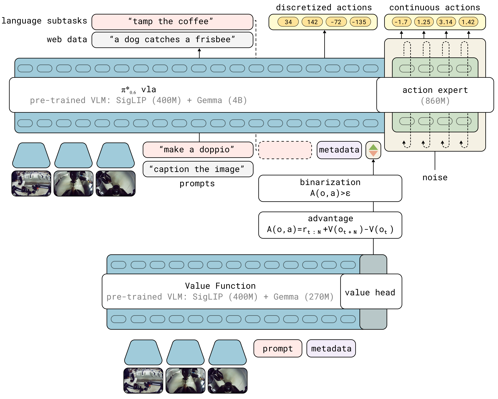

2025 · PHYSICAL INTELLIGENCE · RL 后训练
π0.6、π*0.6 与 RECAP 精读
1. 先分清基座与星号版本
π0.6是基座，π*0.6是引入RECAP的版本。模型卡描述：以Gemma3-4B初始化视觉语言主干，动作专家约860M，保留高层子任务与低层动作生成，并加入更丰富的条件。采用Knowledge Insulation训练时，动作专家的梯度不回传到主VLM；这与原π0的训练接口有区别。不能只把它理解为“π0.5改个版本号”或把星号等同更大的参数量。
复现入口先读模型卡，而不是从展示视频推断版本：它给出了动作专家、注意力与训练梯度路径。基座的预训练任务片段不等于RECAP后的全天运行记录。
2. 问题：如何从自己遇到的错误中得到训练信号？
策略偏差会改变后续观测分布，错误可能累积。专家接管能补恢复行为；自主rollout还能提供成功、失败与速度差异。困难在于如何使用这些不等质量的数据，而不只是无条件复制全部动作。模仿学习并非“永远不会修错”，RECAP的重点是把奖励反馈、价值估计与条件化训练组织成可扩展配方。
来源：RECAP 官方博客 · © Physical Intelligence · 原始文件
点击播放，可暂停、拖动进度或全屏；本站不自动播放，也不额外加速。
3. RECAP精读
3.1 用回报训练价值分布模型
根据轨迹结果构造回报，训练一个多任务价值分布模型。论文把经验回报离散到201个bin，用交叉熵学习，再取期望恢复标量价值。它估计从当前处境到任务完成的前景与时间代价，不是每个动作的真值正确标签，也不是反向扫描录像就能确定早期错误原因的因果模型。
3.2 从优势估计到输入条件
用不折扣的n步形式示意：$\hat A_t=\sum_{j=0}^{N-1}r_{t+j}+V(o_{t+N})-V(o_t)$；终止时处理bootstrap。按任务阈值得到二值指示 $I_t=\mathbf1[\hat A_t>\epsilon_\ell]$，然后训练条件策略 $\pi_\theta(a_t\mid o_t,\ell,I_t)$，也保留无条件训练分支。推理时请求正优势条件；这是优势条件化，不是简单以优势给每条loss乘权重，也不等同PPO梯度更新。

来源：RECAP 论文 Fig. 3 · © Physical Intelligence · 原始文件
3.3 离线预训练、任务微调与真机迭代
流程是离线RL预训练 → 演示任务微调 → 部署并收集自主经验/专家接管 → 更新价值与策略，可重复迭代。论文把人工纠正按正优势处理，这是关于纠正质量的设计假设，不是所有人工接管天然最优。数据来源、奖励定义、优势阈值与条件dropout都有公开论文描述，不能再写成“论文完全没公开实现细节”；公开说明也不等于完整代码、数据与权重均已发布。
来源：RECAP 官方博客 · © Physical Intelligence · 原始文件
点击播放，可暂停、拖动进度或全屏；本站不自动播放，也不额外加速。
4. 结果与边界
论文在咖啡、衣物折叠与纸盒装配等任务比较成功率和吞吐；在部分困难任务上报告吞吐超过2×、失败率约减半，并展示长时间部署。论文描述一次约13小时的咖啡运行，短片并非该完整记录。应按具体任务、迭代轮次、人工反馈与统计协议阅读，不推广成“全天绝不失败”或已经证明部署安全。
5. 研究者注记
做后训练研究时，先固定奖励/终止协议、价值校准与数据配比，再比较无条件模仿、只用人工纠正、优势条件化和其他RL提取方式。价值估计不准、正标签过稀或分布外动作都可能影响改进。应报告人工接管、场景复位与额外数据成本，而不仅是最终成功率。
6. Knowledge Insulation：隔离梯度，不是冻结所有知识
设VLM产生前缀特征 $h_\psi$，专家参数为 $\theta$。连续目标可概括为 $L_{\rm FM}(\theta;\operatorname{sg}(h_\psi))$，其中 $\operatorname{sg}$ 前向保留数值、反向阻断梯度。因此该路径的 $\nabla_\psi L_{\rm FM}=0$，但token预测的 $\nabla_\psi L_{\rm CE}$ 仍可以非零；主干不是必然永久冻结。
这样做的动机是：新加入的连续专家与原有语义表示在训练早期不一定兼容，直接回传动作损失可能干扰VLM。离散token监督仍能训练主干，同时连续专家学习读取其表示。这里是训练路径的隔离，不等于推理时专家完全不读取VLM，也不等于切断两者之间的attention。
这解释了图中两类目标的分工，却不能证明任何数据/架构上隔离都最优。若做消融，应固定训练目标、可训练参数、计算预算与专家初始化，再比较梯度是否穿越主干。细节见 Knowledge Insulation原论文第5节。
7. 价值学习：从整段结果到当前处境的估计
对完整轨迹累计实际回报 $R_t=\sum_{j=t}^{T}r_j$，离散成目标bin，用交叉熵训练价值分布。若第 $b$ 个bin对应标量 $v_b$，期望值为 $V_\phi(O_t,\ell)=\sum_{b=1}^{B}p_\phi(b\mid O_t,\ell)v_b$，论文采用201个bin。这里的监督来自完整轨迹结果，是Monte Carlo价值估计，不是对每个动作都有人手工标“正确/错误”。
该价值描述的是数据所代表的行为混合：初期以演示为主，加入自主rollout后参考分布发生变化。它不是一个脱离当前策略、对任意分布外动作都知道最优后果的 $Q^*$ oracle。用它估计优势时，要检查训练数据覆盖与校准，而不是只观察价值曲线是否平滑。
回报还含时间代价和失败处理，所以“价值升高”不总能翻译成“成功概率同比例升高”。若修改奖励、终止定义或归一化，bin范围、优势尺度和阈值都要相应重新检查。对应原文见 RECAP IV-A与V-C节。
8. 教学算例：为什么一次动作会得到正优势标签
若当前价值过于悲观，优势可能虚高；若后继价值因视觉误判过于乐观，坏动作也可能获得正标签。因此终止mask、奖励累计区间、价值版本和状态时间对齐都影响标签质量。人工纠正强制给正标签还额外依赖“纠正确实有帮助”的假设。
为什么增加一个输入条件能改变策略？
对数据分布用Bayes规则，有 $p_D(a\mid O,I=1)\propto p_D(I=1\mid O,a)\,p_D(a\mid O)$。在估计合理、覆盖充分时，要求正条件会提高有利动作的相对概率；模型训练仍可读取正负两类数据，只是带不同条件。这与将负样本全部删除或只把loss乘一个权重，是不同的参数化。
上述代数有助于理解policy extraction，却不是对有限数据神经网络的无条件改进证明。真实策略还可能把条件与场景偏差关联起来；阈值太高也可能使正条件支持过窄。论文因此同时训练有条件与无条件行为，并讨论阈值和引导强度的权衡。
9. 一轮RECAP迭代怎样落到数据和模型版本
- 收集并标注： 保存演示、自主尝试和纠正片段，记录策略版本、成功/失败与终止原因，不能只存剪辑后的成功片段。
- 训练价值： 从当前累计数据计算回报监督，训练价值模型；在留出的轨迹上检查成功、失败及恢复阶段的估计。
- 生成优势标签： 固定价值checkpoint和n步区间，按任务阈值给动作/片段打标签；明确纠正片段边界。
- 训练策略： 以原始观测、任务和优势条件学习离散/连续目标，保留无条件分支；KI路径与优势条件不是同一个开关。
- 重新部署评测： 使用正条件请求动作，按同一初始分布和人工介入规则评估，再决定是否收集下一轮。
价值模型服务于训练标签，不意味着每次在线动作都必须先由价值模型打分或做搜索；实际部署是否在线调用额外模型要另外说明。同样，使用更多纠正数据的BC对照很重要，否则可能把“多了一份恢复数据”的收益全部归给RL提取方式。
若价值和策略反复更新，却没有保存生成标签时的checkpoint，后续就很难解释一次性能变化来自新数据、新价值还是新训练配比。每轮至少保存数据清单、奖励版本、标签统计、价值版本和策略版本。
10. 研究建议：把改进与额外反馈成本一起计量
| 对照 | 想回答的问题 | 需要匹配或记录 |
|---|---|---|
| 原始BC / 加纠正的BC | 恢复数据本身有多少贡献？ | 相同演示与纠正、任务预算和接管规则 |
| BC / 优势条件化 | 价值驱动的条件提取是否额外有效？ | 相同数据混合、训练预算、测试条件 |
| 不同价值/阈值 | 错误标签和正样本比例如何影响策略？ | 价值校准、正标签率、动作分布与失败类型 |
| 连续部署多轮 | 改进能否保留并迁移到新初始条件？ | 人工分钟数、复位次数、历史任务回归测试 |
至少同时报告成功率、单位时间完成数、人工接管/复位成本和不确定性。长程任务中，失败更早发生会让“平均episode更短”，所以不能只用平均时长推断效率提升。需区分成功条件下用时、全流程吞吐和失败率。
最有信息的研究链是：哪类真实失败 → 哪类新增数据 → 价值如何改变 → 哪些动作获得新标签 → 闭环失败是否减少。它把视频、奖励、价值和策略连起来，但不把价值函数当作物理因果解释器。
11. 价值分布的含义：分类概率不是自动获得的认知不确定性
价值模型把观察与任务映射到回报bin的概率。对当前数据中的多个类似状态，如果后续有不同结果，分布可以表达这类结果变化；但输出分布变宽不自动等于模型知道自己处于分布外，也不能直接充当安全置信度。
训练目标由轨迹累计回报构造：先把一个真实回报映射成bin标签，再用交叉熵学习。部署或生成优势标签时取期望，只保留一个标量会丢失分布形状。两个分布可能有相同期望，一个集中、一个两端分散，对风险敏感任务的含义不同；原算法是否使用这些额外信息，应与可扩展研究分开说明。
怎样检查校准而非只看loss？
在未用于价值训练的轨迹上，按预测值分组，对比实际回报均值、失败比例与不同任务/阶段的误差。还要检查恢复状态、失败前后和新策略数据；总体误差小，可能掩盖少数关键状态上系统性乐观。
bin的支撑范围与量化步长也重要。超出范围的回报若被截断，模型没有机会区分尾部更差的结果；均匀bin、最近中心映射且无裁剪时，单个标签量化误差有明确的半步长界，但这不是神经网络预测误差界。
RECAP的Monte Carlo价值监督描述的是数据行为混合下的回报，并非全状态最优 $V^*$。若当前策略已经偏离数据支持，价值仍可能外推错误。对应 IV-A节的价值学习定义；本节的校准与不确定性检查是研究建议，不能据此宣称原模型具备可靠的分布外检测。
12. 奖励与时间单位：为什么换采样频率会改变价值尺度
RECAP V-C节 使用按episode成功标签构造的奖励：成功终止时为0、失败终止时为较大的负惩罚，其余步为负时间代价；实际价值按任务长度作归一化。这个设计让价值兼顾完成前景与效率，而不是单纯输出一个二值成功概率。
如果同一物理过程按50Hz而非10Hz计步，未归一化的“剩余步数”会相差约5倍。n步跨度也不再对应同样的秒数。因此奖励单位、训练数据频率、价值归一化、n步区间与优势阈值要作为一套契约记录，不能只沿用同一个数字阈值。
归一化也会影响跨任务比较
按不同任务最大长度缩放，可以让值域更接近，但一个单位的归一化改进未必对应相同秒数或相同重要性。任务A还差一次抓取、任务B还差一长串操作，期望值接近也不代表两者需要同一种恢复动作。
| 改动 | 连带检查 |
|---|---|
| 数据/控制时间分辨率 | 每步代价、n步跨度与episode长度定义 |
| 成功/失败终止规则 | 末步奖励、bootstrap与失败惩罚 |
| 按任务归一化 | bin映射、阈值与跨任务标量比较 |
| 人工中断/异常停止 | 是否被错标为自然成功或普通超时 |
在日志中保留原始结果标签与归一化后的训练目标，便于以后重算。若只保存一个最终bin ID，奖励版本更新后就难以追溯。任务评测仍应单独汇报真实成功与耗时，避免把一个改过量纲的价值曲线当成性能提升。
13. n步优势的偏差与方差：标签为什么可能翻转
对非终止片段，n步优势由累计奖励与前后两个价值估计相减构成。若前后估计误差分别为 $e_t,e_{t+N}$，仅由价值引入的优势误差就是 $e_{t+N}-e_t$。当两处绝对误差均不超过 $\varepsilon$，可得到绝对误差不超过 $2\varepsilon$ 的粗界；它不是训练后自动成立的模型保证。
较短n步区间更依赖价值差分，较长区间包含更多实际后果，却可能增加回报变化与行为混合的影响。不能简单说n越长越无偏或越短越稳定；奖励噪声、相关性和策略分布都会影响具体权衡。
终止与episode边界怎么处理？
- 累计奖励遇到真正终止时停止，不把下个episode的奖励接过来。
- 终止状态不再沿用普通非终止bootstrap；超时截断与真正终止的语义应明确。
- 人工接管片段、系统异常和自然完成分别标记，不用一个笼统done字段覆盖全部情况。
- 保存用于标签生成的价值checkpoint、奖励版本、n步跨度与任务阈值。
离线数据还来自不同历史策略和人类行为，估计的参考分布并不等于此刻最新策略。原方法利用这种数据混合获得实用改进，但不能把所有优势数字都解释成对任意当前策略精确的on-policy真值。
14. 优势阈值的作用：更高标准与更少正样本之间
二值化 $I=\mathbf1[\hat A>\epsilon_\ell]$ 把连续估计压成一个条件。阈值升高通常会减少正样本，但留下的样本也可能更偏向某些阶段、场景或操作员；正条件不必然只编码了“动作更好”这一种信息。
跨任务直接复用未归一化阈值可能不合理：长任务的回报尺度、阶段跨度和失败惩罚不同。按任务阈值或分位数构造条件，分别有不同含义；若研究分位数方案，应作为新设计注明，不能写成原算法默认做法。
还应按数据来源和阶段统计正标签率。若人类纠正被强制设为正，而自主数据大多为负，模型可能同时学到操作者风格或场景差异。纠正质量假设、片段边界与来源配比都需要审计。
研究时可以固定数据与价值，扫描阈值并比较：正标签覆盖、不同阶段的标签稳定性、条件动作分布与闭环表现。仅挑测试集上最好的阈值会引入选择偏差；应先在验证协议里确定，再报告留出测试。
一个更强的分析是观察阈值附近样本是否反复随价值版本翻转。标签非常不稳定可能提示估计不足，但也可能来自真实参考策略变化；需要把两类变化分开。
15. 从条件化到策略改进：密度比视角与有限数据边界
把无条件参考策略记为 $\pi_{\rm ref}$，正优势条件策略记为 $\pi_+$。原文的策略提取可概括成 $\pi_\beta(a\mid O)\propto\pi_{\rm ref}(a\mid O)[\pi_+(a\mid O)/\pi_{\rm ref}(a\mid O)]^\beta$。$\beta=0$回到参考，$\beta=1$得到条件策略；更大引导会强调两者的密度比，但并不自动更可靠。
这个表达说明为何条件模型能隐式保留行为分布附近的支持，而不必在每次训练显式计算一个复杂动作密度的策略梯度。对flow模型，监督拟合向量场较直接，精确归一化动作密度则不是普通forward立即给出的量；这也是不能把MSE损失外观直接等同“没有RL信号”的原因。
理论条件与实际实现之间有什么距离？
理想推导依赖正确价值、合适的改进标签、数据覆盖与可表示/可优化的策略。在有限数据和函数逼近下，条件可能与场景偏差纠缠，模型也可能在支持较弱的区域产生动作。不能从理论中的改进关系直接推出每轮真机部署必然单调变好。
强引导可能把分布推向边缘，原文也讨论阈值与引导权衡。若研究CFG，要保持条件/无条件训练方式一致，并分别检查动作极值和任务结果；只看成功样例更果断，不足以证明风险没有增加。
与加权回归比较时，应共享演示、纠正和自主数据，再匹配训练预算。不同方法丢弃或弱化负样本的程度不同；若数据支持同时改变，不能把最终差异全部归因于一个数学提取公式。
原始定义见 III、IV-B与附录A-E。本节是原理展开与复现边界说明，不提供任何未经验证的在线策略改进保证。
16. 三组参数与两类监督：把RECAP训练图画清楚
至少区分策略主干参数 $\psi$、连续动作专家参数 $\theta$ 和独立价值参数 $\phi$。价值先根据轨迹回报训练，再用于生成优势条件；策略在对应数据与标签下训练。这里不是让每次actor反向传播都穿过一个可微的在线critic去修改动作。
来源：RECAP 论文 Fig. 3 · © Physical Intelligence。沿用原文件，未重绘。
KI控制连续专家损失能否修改主干；token监督仍可训练主干。优势条件则控制策略拟合哪种质量的数据行为。二者可以同时存在，但“有stop-gradient”不等于实现了RECAP，“有优势token”也不等于实现了KI。
| 对象 | 监督来源 | 常见错误理解 |
|---|---|---|
| 价值模型 $\phi$ | 轨迹结果生成的回报/bin | 把它当每个动作的人工真值标签器 |
| 策略主干 $\psi$ | 所选token目标及条件数据 | 以为KI必须冻结全部VLM训练 |
| 动作专家 $\theta$ | 带条件的连续生成目标 | 以为部署时始终需要critic搜索动作 |
生成标签时固定价值模型版本，有助于把监督定义从策略优化中分离。下一轮更新价值后，即使动作数据没变，标签也可能变；复现报告需要保存这种变更，而不只记录最终策略权重。
对应 KI原论文 与 RECAP训练图与实现描述。公开论文给出的方法细节不等于所有原始数据、训练服务和checkpoint均可直接取得，实际复现应明确可访问范围。
17. 自主数据和人工纠正的谱系：一次接管如何进入训练
一段被纠正的rollout同时包含策略自主动作、接管前的失败状态、人工恢复和接管后的继续执行。若只保存最后的成功标签，却不保留控制权切换边界，就无法知道哪些动作来自人、哪些来自策略，也无法审计强制正标签的适用区间。
纠正边界附近还可能存在控制延迟：人的命令到达、执行器真正采用命令和观察到结果的时间并不相同。按一个按钮时间直接切片，可能给策略动作贴成人类动作标签。需要保存控制来源与实际生效时间，而不仅是屏幕录像。
| 记录 | 为什么需要 |
|---|---|
| 策略与价值版本 | 区分哪个行为分布产生了轨迹，哪个模型生成了标签 |
| 控制来源时间段 | 审计演示、自主、接管与恢复动作的边界 |
| 结果与终止原因 | 区别自然失败、人工中断、系统异常与完成 |
| 复位与场景变化 | 核算额外人工成本及是否改变初始状态分布 |
| 原始奖励与标签版本 | 以后能按新协议重算，而非只剩一个二值I |
累计数据并不自动无偏：较早策略可能占据更多轨迹，少量难例也可能被高频重复；新数据可能来自特别容易或特别困难的场景。数据抽样与来源配比应明确，不把“更多经验”当作同质信息量。
研究纠正价值时，应与共享同一恢复数据的BC比较。若仅对RL组提供人类接管，却不给基线这些新增样本，实验混合了信息增量与方法增量，难以解释优势条件化究竟贡献了什么。
18. 长时间没失败能说明多少：零失败与可靠性的统计边界
长时间连续运行很有价值，但仍要知道尝试次数、每次任务定义、是否人工复位、是否接管以及场景是否一直变化。只给总时长，无法直接换算成可比较的失败概率；同一场景重复操作还可能高度相关。
真实部署若有共同的硬件漂移、操作者复位习惯或长程状态累积，独立假设不成立，简单二项区间会低估或误述不确定性。应按合理的episode、场景或连续运行段记录，并报告这些依赖结构。
可靠性账本至少分四项
- 任务成功/失败，以及失败发生在哪个阶段。
- 人工接管与复位，区分模型自行恢复和人类使其继续。
- 成功条件下完成时间与全流程单位时间吞吐。
- 系统异常、硬件问题与任务策略失败，不随意从分母删去。
吞吐提高可能来自更快成功、较少失败，或更多人工帮助；失败率降低也可能以更慢动作为代价。应同时报告，不能只挑一个方向。NIST的比例区间说明 提供统计基础，但任何有限成绩都不等于部署安全认证。
19. 后训练失败审计：奖励、价值、标签还是策略出了问题
一次后训练变差，可以沿因果链逐层排查：真实结果是否标对，回报是否算对，价值是否对关键状态校准，优势标签是否稳定，策略是否理解条件，最后再检查实际执行接口。只看最终成功率下降，无法确定该重训哪一个模型。
| 层 | 异常信号 | 对照检查 |
|---|---|---|
| 奖励/终止 | 明显未完成却被记成功 | 独立结果复核与原始录像/日志 |
| 价值 | 关键失败状态被持续高估 | 留出失败与恢复轨迹的误差分层 |
| 优势标签 | 阈值附近频繁翻转或来源严重偏置 | 固定价值重算、按任务阶段统计 |
| 策略条件 | 正条件只改变激进程度却不改善任务 | 同观察下条件/无条件比较及闭环验证 |
| 执行 | 模型输出合理但动作过期或控制源错位 | 时间戳、动作锚点与接管边界审计 |
奖励可能被策略利用：如果判定规则只检查某个可见状态，策略可能到达该状态而没有完成真正任务。应保留与训练奖励分开的最终评价，必要时用人工复核判定协议失效，而不是继续优化错误分数。
恢复失败也可能来自数据缺乏，而非价值模型太小。若训练从未覆盖某种接触/掉落状态，条件化不能凭空补出正确动作；先增加合适的支持数据，再判断提取目标是否有效。
这里提供诊断顺序，不对具体失败作未经证据支持的因果结论。每次修改只针对可验证的一层，并在同一留出协议上重新测，才能积累可解释的研究结果。
20. 可复现课题：优势标签信息量决定了多少后训练收益
研究假设： 如果优势条件主要利用真实改进信息，破坏标签与动作好坏的对应关系应损伤收益；如果随机同频标签也有效，可能存在额外的分组、正则或数据来源因素。实验需固定数据、计算与条件频率。
| 组别 | 隔离的因素 |
|---|---|
| 共享数据的BC | 新增演示/纠正本身带来的信息 |
| 真实优势标签 | 价值估计驱动的条件提取 |
| 保持正比例的随机标签 | 标签频率与额外条件参数化的影响 |
| 受控标签翻转或不同阈值 | 条件对估计误差与稀疏正支持的敏感性 |
标签扰动先在离线/仿真研究中进行，不把故意错误的策略直接试到真实硬件上。主要指标包括成功率、全流程吞吐、人工接管率与恢复效果，并按任务阶段和数据来源分层；仅比较训练loss无法判断条件信息是否被有效利用。
另一个分支是固定策略训练，只改变价值校准或n步跨度；这样能追踪“价值误差→标签翻转→行为变化”的路径。不要同时换数据、critic、奖励和策略结构，再把总提升归因于一个阈值选择。
交付物应含可复算标签、版本清单、来源/阶段统计与独立测试结果。若结论仅在某种正样本比例或任务分布下成立，应保留这一边界，而非把条件化称为普遍自我改进。
这是待验证方案。它把后训练问题变成可证伪的具体假设，同时完整核算新增反馈与人工成本；不把理论策略改进关系当成有限数据真机系统的保证。
参考：RECAP论文v2（IV、V、附录F） · π0.6模型卡 · 官方博客与演示。